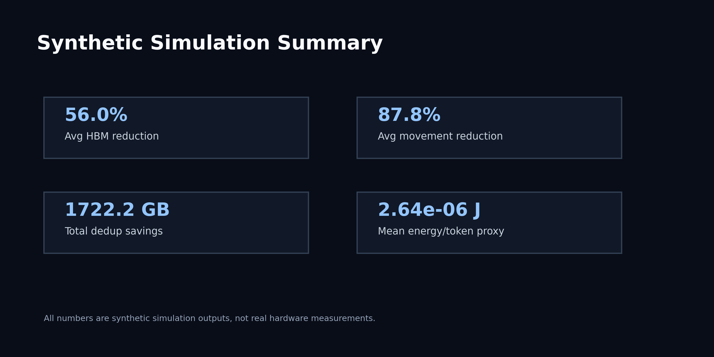
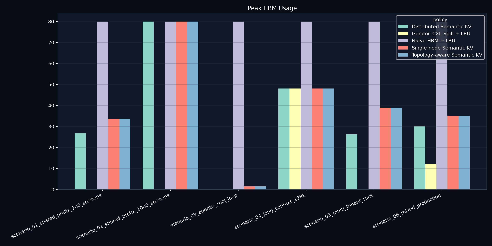
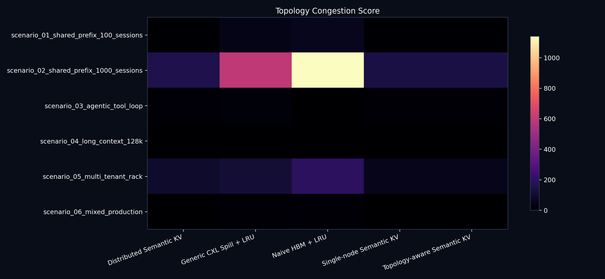
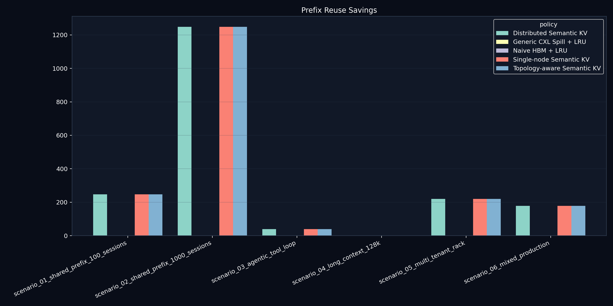
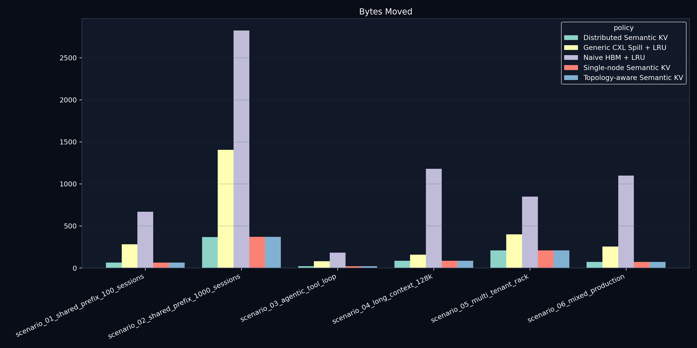
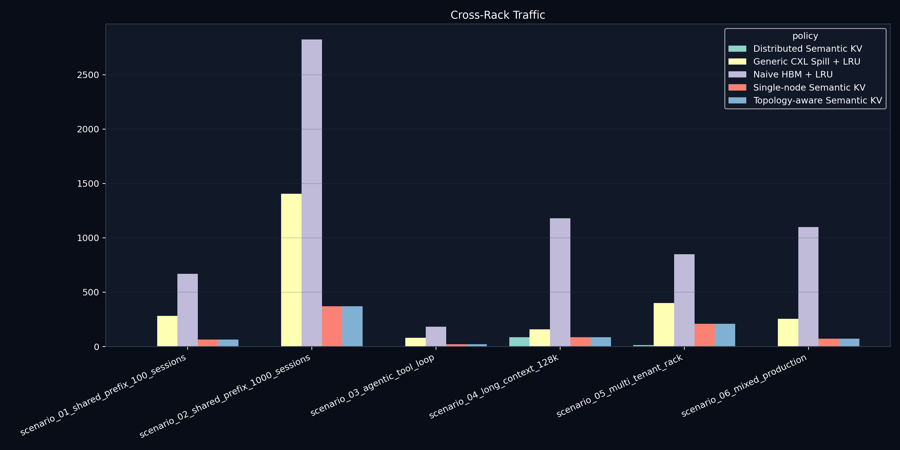
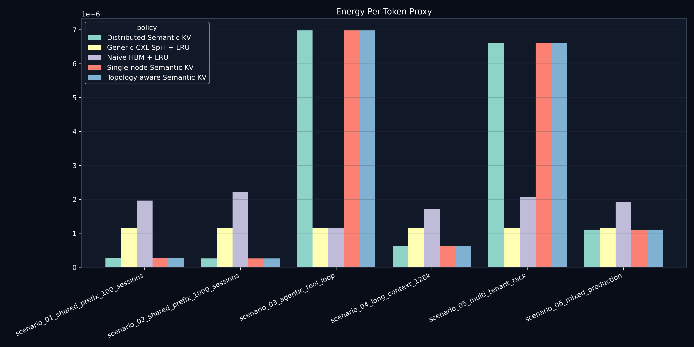
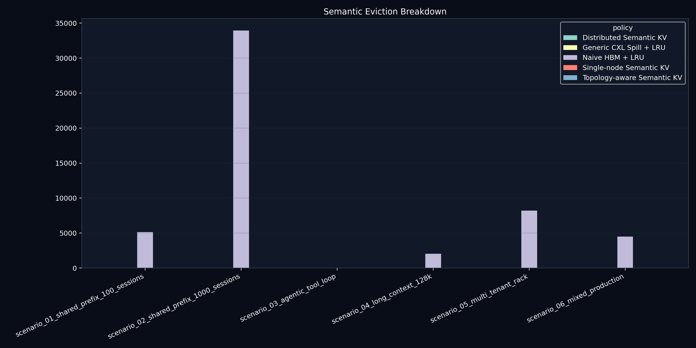
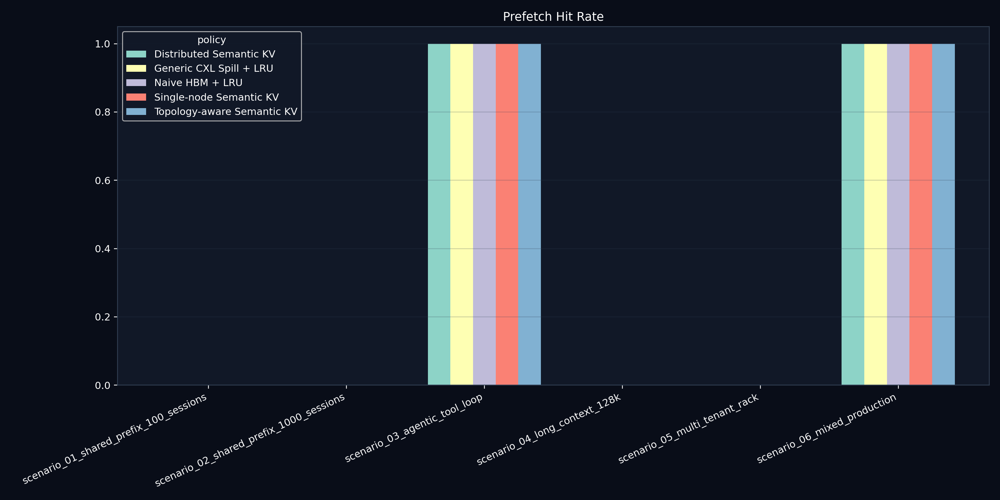

All values are synthetic simulation outputs, not real hardware measurements.
Best policy by throughput proxy: Distributed Semantic KV. Minimum HBM ratio vs naive max: 0.00. Minimum movement ratio vs naive max: 0.01. Max dedup savings: 1106.84 GB. Minimum stall proxy ratio vs naive max: 0.03. Minimum p99 stall ratio vs naive max: 0.00. Max active HBM reservation: 39.06 GB.
Best Policy
Distributed Semantic KV
Min Peak HBM
0.00 GB
Max Dedup Saved
1106.84 GB
Min Bytes Moved
21.41 GB
Overview
Simulation-only overview view.


Topology
Simulation-only topology view.

Memory Tiers
Simulation-only memory tiers view.
Prefix Reuse
Simulation-only prefix reuse view.

Movement
Simulation-only movement view.


Energy
Simulation-only energy view.

Eviction
Simulation-only eviction view.

Trace Replay
Simulation-only trace replay view.

| scenario | policy | peak_hbm_gb | peak_appliance_gb | peak_cxl_gb | total_stored_gb | bytes_moved_gb | avoided_movement_gb | dedup_saved_gb | compression_saved_gb | multicast_saved_gb | cross_rack_traffic_gb | avoided_cross_rack_gb | prefetch_hit_rate | prefix_hit_rate | eviction_count | late_prefetch_count | simulated_stall_ms | stall_overhead_ms | stall_p99_ms | stall_p999_ms | simulated_energy_j | energy_per_token | active_hbm_gb | throughput_score | topology_congestion_score |
|---|---|---|---|---|---|---|---|---|---|---|---|---|---|---|---|---|---|---|---|---|---|---|---|---|---|
| scenario_01_shared_prefix_100_sessions | Naive HBM + LRU | 80.000000 | 0.000000 | 201.250000 | 281.250000 | 668.100000 | 0.000000 | 0.000000 | 0.000000 | 0.000000 | 668.100000 | 0.000000 | 0.0 | 0.000000 | 5152 | 0 | 114.452800 | 114.452800 | 0.000000 | 0.000000 | 1.813282 | 1.967536e-06 | 3.906250 | 0.010000 | 63.816176 |
| scenario_01_shared_prefix_100_sessions | Generic CXL Spill + LRU | 0.000000 | 0.000000 | 281.250000 | 281.250000 | 281.250000 | 0.000000 | 0.000000 | 0.000000 | 0.000000 | 281.250000 | 0.000000 | 0.0 | 0.000000 | 0 | 0 | 2972.880255 | 2972.880255 | 0.465266 | 0.465266 | 1.056965 | 1.146880e-06 | 3.906250 | 0.548077 | 49.764706 |
| scenario_01_shared_prefix_100_sessions | Single-node Semantic KV | 33.634371 | 31.250000 | 0.000000 | 64.884371 | 64.884371 | 220.781250 | 220.781250 | 216.365629 | 220.781250 | 64.884371 | 0.000000 | 0.0 | 0.892344 | 0 | 0 | 291.461089 | 291.461089 | 0.043881 | 0.043881 | 0.243842 | 2.645852e-07 | 3.906250 | 1.870775 | 5.463235 |
| scenario_01_shared_prefix_100_sessions | Topology-aware Semantic KV | 33.634371 | 31.250000 | 0.000000 | 64.884371 | 64.884371 | 220.781250 | 220.781250 | 216.365629 | 220.781250 | 64.884371 | 0.000000 | 0.0 | 0.892344 | 0 | 0 | 291.461089 | 291.461089 | 0.043881 | 0.043881 | 0.243842 | 2.645852e-07 | 3.906250 | 1.870775 | 5.463235 |
| scenario_01_shared_prefix_100_sessions | Distributed Semantic KV | 26.875000 | 38.009371 | 0.000000 | 64.884371 | 64.884371 | 220.781250 | 220.781250 | 216.365629 | 220.781250 | 0.000000 | 220.781250 | 0.0 | 0.892344 | 0 | 0 | 542.734376 | 542.734376 | 0.083665 | 0.083665 | 0.243842 | 2.645852e-07 | 3.906250 | 1.889445 | 6.235294 |
| scenario_02_shared_prefix_1000_sessions | Naive HBM + LRU | 80.000000 | 0.000000 | 1326.250000 | 1406.250000 | 2825.300000 | 0.000000 | 0.000000 | 0.000000 | 0.000000 | 2825.300000 | 0.000000 | 0.0 | 0.000000 | 33952 | 0 | 599.208534 | 599.208534 | 0.000000 | 0.000000 | 10.268998 | 2.228515e-06 | 39.062500 | 0.010000 | 1139.750000 |
| scenario_02_shared_prefix_1000_sessions | Generic CXL Spill + LRU | 0.000000 | 0.000000 | 1406.250000 | 1406.250000 | 1406.250000 | 0.000000 | 0.000000 | 0.000000 | 0.000000 | 1406.250000 | 0.000000 | 0.0 | 0.000000 | 0 | 0 | 21122.884404 | 21122.884404 | 0.884664 | 0.884664 | 5.284823 | 1.146880e-06 | 39.062500 | 0.010000 | 596.400000 |
| scenario_02_shared_prefix_1000_sessions | Single-node Semantic KV | 79.999979 | 156.250000 | 85.300781 | 321.550760 | 371.150747 | 1106.835938 | 1106.835938 | 1084.699240 | 1106.835938 | 371.150747 | 0.000000 | 0.0 | 0.886375 | 0 | 0 | 1770.778559 | 1770.778559 | 0.072230 | 0.072230 | 1.208419 | 2.622437e-07 | 39.062500 | 1.170832 | 140.216667 |
| scenario_02_shared_prefix_1000_sessions | Topology-aware Semantic KV | 79.999979 | 156.277344 | 85.273438 | 321.550760 | 371.150747 | 1106.835938 | 1106.835938 | 1084.699240 | 1106.835938 | 371.150747 | 0.000000 | 0.0 | 0.886375 | 0 | 0 | 1776.723932 | 1776.723932 | 0.072473 | 0.072473 | 1.208419 | 2.622437e-07 | 39.062500 | 1.170832 | 140.216667 |
| scenario_02_shared_prefix_1000_sessions | Distributed Semantic KV | 80.000000 | 179.558573 | 61.992188 | 321.550760 | 369.550760 | 1106.835938 | 1106.835938 | 1084.699240 | 1106.835938 | 0.000000 | 1106.835938 | 0.0 | 0.886375 | 0 | 0 | 4011.261862 | 4011.261862 | 0.166663 | 0.166663 | 1.208419 | 2.622437e-07 | 39.062500 | 1.092500 | 153.516667 |
| scenario_03_agentic_tool_loop | Naive HBM + LRU | 80.000000 | 0.000000 | 0.000000 | 80.000000 | 184.000000 | 0.000000 | 0.000000 | 0.000000 | 0.000000 | 184.000000 | 0.000000 | 1.0 | 0.000000 | 0 | 0 | 29.307647 | 29.307647 | 0.000000 | 0.000000 | 0.300648 | 1.146880e-06 | 2.500000 | 1.851563 | 0.000000 |
| scenario_03_agentic_tool_loop | Generic CXL Spill + LRU | 0.000000 | 0.000000 | 80.000000 | 80.000000 | 80.000000 | 0.000000 | 0.000000 | 0.000000 | 0.000000 | 80.000000 | 0.000000 | 1.0 | 0.000000 | 0 | 0 | 1004.368249 | 1004.368249 | 0.246273 | 0.246273 | 0.300648 | 1.146880e-06 | 2.500000 | 2.236029 | 19.333333 |
| scenario_03_agentic_tool_loop | Single-node Semantic KV | 1.412499 | 0.000000 | 0.000000 | 21.412499 | 21.412499 | 39.375000 | 39.375000 | 58.587501 | 39.375000 | 21.412499 | 0.000000 | 1.0 | 0.999023 | 0 | 0 | 16.665485 | 16.665485 | 0.000000 | 0.000000 | 1.830669 | 6.983450e-06 | 0.088281 | 2.939813 | 10.500000 |
| scenario_03_agentic_tool_loop | Topology-aware Semantic KV | 1.412499 | 0.000000 | 0.000000 | 21.412499 | 21.412499 | 39.375000 | 39.375000 | 58.587501 | 39.375000 | 21.412499 | 0.000000 | 1.0 | 0.999023 | 0 | 0 | 16.665485 | 16.665485 | 0.000000 | 0.000000 | 1.830669 | 6.983450e-06 | 0.088281 | 2.939813 | 10.500000 |
| scenario_03_agentic_tool_loop | Distributed Semantic KV | 0.000000 | 1.412499 | 0.000000 | 21.412499 | 21.412499 | 39.375000 | 39.375000 | 58.587501 | 39.375000 | 0.000000 | 39.375000 | 1.0 | 0.999023 | 0 | 0 | 174.073424 | 174.073424 | 0.038848 | 0.038848 | 1.830669 | 6.983450e-06 | 0.088281 | 3.377274 | 10.500000 |
| scenario_04_long_context_128k | Naive HBM + LRU | 80.000000 | 0.000000 | 80.000000 | 160.000000 | 1179.028125 | 0.000000 | 0.000000 | 0.000000 | 0.000000 | 1179.028125 | 0.000000 | 0.0 | 0.000000 | 2048 | 0 | 80.024815 | 80.024815 | 0.000000 | 0.000000 | 0.901943 | 1.720320e-06 | 0.156250 | 0.010000 | 0.470588 |
| scenario_04_long_context_128k | Generic CXL Spill + LRU | 48.125000 | 0.000000 | 111.875000 | 160.000000 | 160.000000 | 0.000000 | 0.000000 | 0.000000 | 0.000000 | 160.000000 | 0.000000 | 0.0 | 0.000000 | 0 | 0 | 20.232642 | 20.232642 | 0.000000 | 0.000000 | 0.601295 | 1.146880e-06 | 0.156250 | 0.846997 | 0.000000 |
| scenario_04_long_context_128k | Single-node Semantic KV | 48.125000 | 0.000000 | 39.156250 | 87.281250 | 87.281250 | 0.000000 | 0.000000 | 72.718750 | 0.000000 | 87.281250 | 0.000000 | 0.0 | 0.000000 | 0 | 0 | 17.534095 | 17.534095 | 0.000000 | 0.000000 | 0.328011 | 6.256320e-07 | 0.156250 | 0.918011 | 0.000000 |
| scenario_04_long_context_128k | Topology-aware Semantic KV | 48.125000 | 39.156250 | 0.000000 | 87.281250 | 87.281250 | 0.000000 | 0.000000 | 72.718750 | 0.000000 | 87.281250 | 0.000000 | 0.0 | 0.000000 | 0 | 0 | 17.130804 | 17.130804 | 0.000000 | 0.000000 | 0.328011 | 6.256320e-07 | 0.156250 | 0.918011 | 0.000000 |
| scenario_04_long_context_128k | Distributed Semantic KV | 48.125000 | 39.156250 | 0.000000 | 87.281250 | 87.281250 | 0.000000 | 0.000000 | 72.718750 | 0.000000 | 87.281250 | 0.000000 | 0.0 | 0.000000 | 0 | 0 | 17.160496 | 17.160496 | 0.000000 | 0.000000 | 0.328011 | 6.256320e-07 | 0.156250 | 0.918011 | 0.000000 |
| scenario_05_multi_tenant_rack | Naive HBM + LRU | 80.000000 | 0.000000 | 320.000000 | 400.000000 | 849.600000 | 0.000000 | 0.000000 | 0.000000 | 0.000000 | 849.600000 | 0.000000 | 0.0 | 0.000000 | 8192 | 0 | 167.197473 | 167.197473 | 0.000000 | 0.000000 | 2.705829 | 2.064384e-06 | 10.000000 | 0.010000 | 187.636364 |
| scenario_05_multi_tenant_rack | Generic CXL Spill + LRU | 0.000000 | 0.000000 | 400.000000 | 400.000000 | 400.000000 | 0.000000 | 0.000000 | 0.000000 | 0.000000 | 400.000000 | 0.000000 | 0.0 | 0.000000 | 0 | 0 | 7100.900905 | 7100.900905 | 0.579475 | 0.579475 | 1.503239 | 1.146880e-06 | 10.000000 | 0.108796 | 113.636364 |
| scenario_05_multi_tenant_rack | Single-node Semantic KV | 38.899996 | 80.000000 | 0.000000 | 208.899996 | 208.899996 | 195.000000 | 195.000000 | 191.100004 | 195.000000 | 208.899996 | 0.000000 | 0.0 | 0.884511 | 0 | 0 | 760.101727 | 760.101727 | 0.054937 | 0.054937 | 8.660963 | 6.607790e-06 | 10.000000 | 1.465221 | 53.670455 |
| scenario_05_multi_tenant_rack | Topology-aware Semantic KV | 38.899996 | 80.000000 | 0.000000 | 208.899996 | 208.899996 | 195.000000 | 195.000000 | 191.100004 | 195.000000 | 208.899996 | 0.000000 | 0.0 | 0.884511 | 0 | 0 | 760.599392 | 760.599392 | 0.054937 | 0.054937 | 8.660963 | 6.607790e-06 | 10.000000 | 1.465221 | 53.670455 |
| scenario_05_multi_tenant_rack | Distributed Semantic KV | 26.250000 | 92.649996 | 0.000000 | 208.899996 | 208.899996 | 195.000000 | 195.000000 | 191.100004 | 195.000000 | 13.899996 | 195.000000 | 0.0 | 0.884511 | 0 | 0 | 1205.367897 | 1205.367897 | 0.091590 | 0.091590 | 8.660963 | 6.607790e-06 | 10.000000 | 1.206968 | 97.090909 |
| scenario_06_mixed_production | Naive HBM + LRU | 80.000000 | 0.000000 | 175.000000 | 255.000000 | 1100.400000 | 0.000000 | 0.000000 | 0.000000 | 0.000000 | 1100.400000 | 0.000000 | 1.0 | 0.000000 | 4480 | 0 | 114.442394 | 114.442394 | 0.000000 | 0.000000 | 1.615981 | 1.933955e-06 | 6.406250 | 0.385469 | 14.285714 |
| scenario_06_mixed_production | Generic CXL Spill + LRU | 12.031250 | 0.000000 | 242.968750 | 255.000000 | 255.000000 | 0.000000 | 0.000000 | 0.000000 | 0.000000 | 255.000000 | 0.000000 | 1.0 | 0.000000 | 0 | 0 | 1894.075890 | 1894.075890 | 0.376110 | 0.376110 | 0.958315 | 1.146880e-06 | 6.406250 | 1.738600 | 11.797235 |
| scenario_06_mixed_production | Single-node Semantic KV | 35.039841 | 20.000000 | 9.789062 | 72.328903 | 72.328903 | 160.195312 | 160.195312 | 182.671097 | 160.195312 | 72.328903 | 0.000000 | 1.0 | 0.899523 | 0 | 0 | 187.127905 | 187.127905 | 0.041330 | 0.041330 | 0.928144 | 1.110772e-06 | 5.219531 | 2.883507 | 2.172811 |
| scenario_06_mixed_production | Topology-aware Semantic KV | 35.039841 | 29.789062 | 0.000000 | 72.328903 | 72.328903 | 160.195312 | 160.195312 | 182.671097 | 160.195312 | 72.328903 | 0.000000 | 1.0 | 0.899523 | 0 | 0 | 187.223704 | 187.223704 | 0.041330 | 0.041330 | 0.928144 | 1.110772e-06 | 5.219531 | 2.883507 | 2.172811 |
| scenario_06_mixed_production | Distributed Semantic KV | 30.039062 | 34.789841 | 0.000000 | 72.328903 | 72.328903 | 160.195312 | 160.195312 | 182.671097 | 160.195312 | 0.000000 | 160.195312 | 1.0 | 0.899523 | 0 | 0 | 355.061495 | 355.061495 | 0.066632 | 0.066632 | 0.928144 | 1.110772e-06 | 5.219531 | 2.899180 | 2.382488 |